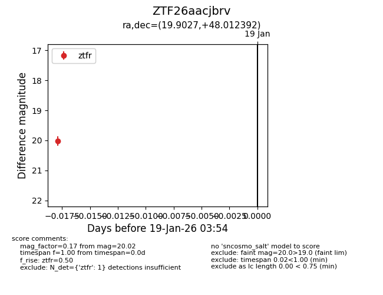
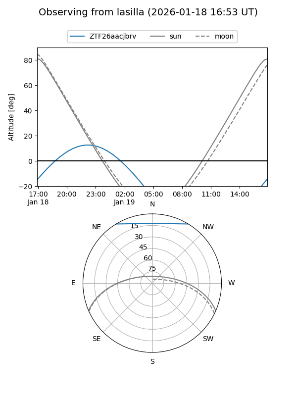
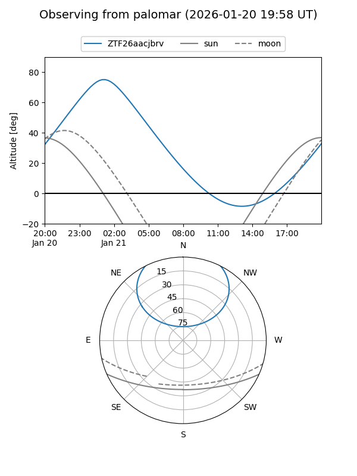

ZTF26aacjbrv
Target ZTF26aacjbrv at 2026-01-19 05:30
Aliases and brokers:
FINK: link
Lasair: link
ALeRCE: link
alt names
ZTF26aacjbrv (ztf,fink_ztf)
Coordinates:
equatorial (ra, dec) = 19.9027,+48.01239
equatorial (HMS+DMS) = 01:19:36.64,+48:00:44.61
galactic (l, b) = (127.7943,-14.59320)
Flags:
Photometry:
last ztfg=19.95, ztfr=20.02
1 ztfg, 1 ztfr detections
Lightcurve

Visibility


Additional plots